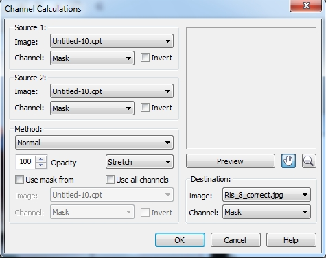

Делаем виньетку в Photo-Paint
В этом, достаточно большом уроке, мы рассмотрим не только создание виньетки, но и попутно рассмотрим коррекцию проблемного фото.
На рис. 1 показана исходная фотография, она же находится в прикрепленных файлах.
Если мы внимательно посмотри на лицо, то обнаружим, что фото имеет довольно характерные дефекты, имеющиеся на многих цифровых фотографиях. Но перед началом экспериментов, как это рекомендуют профессионалы, а я присоединяюсь к их пожеланиям – сделаем дубликат оригинала и сохраним его под новым именем. Выполните команду Image > Duplicate (Изображение > Дублировать). Я сохранил новый файл под именем Vignette_copy.
Чтобы с чего-то стартовать, давайте посмотрим сначала на источник наших проблем. Предварительно заглянув в докер Info, мы обнаружим слишком большие значения красного на лице девочки. Чтобы всё это имело наглядность, давайте разобьем изображение на каналы. Выполните команду Image > Split Channels to > RGB (Изображение > Разбить каналы на > RGB) (рис. 2).
На скриншоте видно, что красный канал слишком светлый, что и объясняет избыток красного цвета в изображении, но не очень хорошо заметны дефекты из-за сильного уменьшения. Поэтому, на рис. 3 показан увеличенный фрагменты красного и синего каналов.
Как и положено «по закону жанра», в синем канале больше всего дефектов, но к сожалению, красный тоже не может похвастать отсутствием оных. В зеленом канале их меньше, но они там тоже присутствуют. В такой ситуации, попытка улучшить фотографию обычными средствами, типа фильтра Tone curve (Цветовая кривая), фильтрами размытия и т. п., надлежащего результата не даст, т. к. дефекты расположены неравномерно, в разных каналах они расположены в разных участках фото и имеют довольно большой размер. Поэтому используем несколько другую методику и обратимся за помощью к другому цветовому пространству, а конкретно к Lab. Т. к. мы все-таки дальнейшую работу проводить все-таки в RGB, то сделаем копию файла Vignette_copy. Для этого снова выполните команду Image > Duplicate (Изображение > Дублировать). Photo-Paint создаст дубликат с «дежурным названием» -- Untitled-1.cpt. Теперь преобразуем файл Untitled-1.cpt из RGB в Lab. Выполните команду Image > Convert to > Lab Color (24-bit) (Изображение > Преобразовать в > Lab Color (24-bit)). Визуально с нашим дубликатом ничего не произойдет, но когда мы разобьем его на каналы, мы увидим там существенную разницу с каналами RGB. Т. к. каналы a и b представляют из себя «серую мешанину», то они нас не интересуют, а вот канал L нам как раз очень подойдет. Если вы на него внимательно посмотрите (рис. 4), то увидите, что он практически лишен тех дефектов, которые присутствовали в красном и синем канале.
Следующий наш шаг – замена дефектного канала на канал L. Нам в этом поможет команда Calculations (Вычисления). Однако канал L чуточку темнее красного канала и мы сделаем замену его «осветленной» версией. Конечно, надо понимать, что осветление красного канала приведет к появлению избытка красного цвета во всем изображении. Но этот «побочный эффект» мы потом исправим.
Выполните команду Image > Calculations (Изображение > Вычисления). В появившемся диалоговом окне Channel Calculations (Вычисления над каналами) установить настройки, как показано на рис. 5.
Установка флажка Use mask from (Использовать маску из) и выбор красного канала для маски, позволяет «предохранить» значения яркости красного канала от изменений. Кроме того, чтобы немного «ослабить» влияние Метода наложения Add на результат, я установил в счетчике Opacity (Непрозрачность) значение – 80. Результат показан на рис. 6.
Как я и говорил, в изображении появился избыток красного. После этого вы можете избавиться от ненужного теперь дубликата, Untitled-1.cpt, закрыв его. Сейчас мы исправим избыток красного цвета.
Выполните команду Adjust > Tone Curve (Настройка > Цветовая кривая). Изменим форму кривой, как показано на рис. 7.
Примечание – Файл самой кривой также находится в прикрепленных файлах и если захотите повторить урок используя это фото, то сможете воспользоваться этим файлом при использовании фильтра Tone Curve (Цветовая кривая).
Результат показан на рис. 8.
Результат намного лучше, чем оригинал, в том смысле, что исчезли те цветовые отливы, которые были в исходнике.
Теперь немного улучшим фото, хотя при желании, улучшения можно было бы и закончить. Воспользуемся Лабораторией настройки изображений. Выполните команду Adjust > Image Adjustment Lab (Настройка > Лаборатория по корректировке изображений). В открывшемся диалоговом окне воспользуемся сначала автоматическими средствами коррекции, для чего нажмите кнопку Auto Adjust (Автонастройка) (рис. 9).
В данной ситуации автонастройка сработала довольно неплохо, хотя контраст «зашкаливает». Подправим немного эти результаты, установив в этом же окне значения параметров, как на рис. 10.
Теперь изображение приобрело желаемый вид. Во всяком случае, я остановлюсь именно на этом результате.
Второй этап нашего урока – создание виньетки. Но сначала нужно отделить девочку от фона. Создадим еще один дубликат изображения, чтобы наши действия случайно не повредили результат. Снова выполните команду Image > Duplicate (Изображение > Дублировать). В дубликате выполните команду Adjust > Desaturate (Настройка > Убрать насыщенность), в результате чего, изображение станет черно-белым. Теперь нам надо максимально усилить контраст, чтобы можно было легко выполнить выделение. Выполните команду Adjust > Tone Curve (Настройка > Цветовая кривая), чтобы увеличить контраст (рис. 11).
Результат показан на рис. 12.
Теперь возьмите инструмент Ластик (горячая клавиша Х) и сотрите лишние линии и пятна на заднем плане, чтобы получилось, как на рис. 13.

Закрасьте девочку с помощью черной кисти. Чтобы не закрасить случайно просветы в украшении на голове, переключите на Панели свойств на режим наложения на Overlay. Те пряди волос, которые остались серыми, не закрашивайте, потому что это будет достаточно трудно сделать, а для создания маски и последующей работы, это мешать не будет. После закраски, у вас должно получиться, как на рис. 14.
Теперь создадим маску, которую в данной ситуации можно легко сделать. Для этого выберите инструмент Magic Wand Mask (Маска волшебной палочкой), нажав горячую клавишу W. На Панели свойств, установите низкое значение параметра Tolerance (Допуск) = 3 и щелкните на белом фоне. Однако у вас останутся не выделены части (просветы) между прядями волос и в украшении на голове. Чтобы выделить и их, выполните команду Mask > Mask Outline > Similar (Маска > Абрис маски > Подобное).
Теперь пришло время эту маску сохранить, чтобы использовать в цветном изображении. Можно было бы сохранить полученную маску на диск, а потом загрузить ее в цветном изображении. Но я покажу в этом уроке другой способ загрузки маски, с помощью команды Calculations (Вычисления), чтобы «расширить ассортимент» применяемых команд и чтобы урок был более полезным для начинающих пользователей.
Выполните команду Image > Calculations (Изображение > Вычисления). В появившемся диалоговом окне Channel Calculations (Вычисления над каналами) установить настройки, как показано на рис. 15.

Я сейчас скажу пару слов, чтобы объяснить настройки на рис. 15.
Т. к. нам нужно загрузить в цветное изображение (у меня оно имеет текущее название, Ris_8_correct.jpg) созданную маску из черно-белого изображения, которое у меня имеет название Untitled-10.cpt, то в качестве Source 1 (Источника 1) и Source 2 (Источника 2) было выбрано черно-белое изображение., что видно в раскрывающихся списках Image (Изображение). В списках Channel (Канал), находящихся ниже, выбран пункт Mask (Маска). Таким образом мы задали источник и то, что мы из этого источника будем использовать. А в области Destination (Назначение), естественно указал, куда эту самую маску нужно разместить, т. е. в наш цветной файл Ris_8_correct.jpg. А в раскрывающемся списке Channel (Канал) также выбрал Mask (Маску), т. к. нам нужно, чтобы маска загрузилась в маску цветного изображения.
После загрузки маски в цветное изображение, просто нажмите клавишу Delete, чтобы удалить окружающий девочку фон (если у вас конечно при этом активен инструмент выделения, иначе фон по нажатию клавиши не удалится)(рис. 16). Небольшой фрагмент пряди волос с фоном, слева, надо будет подчистить ластиком.
Пусть вас не очень смущает фрагмент фона между волосами, т. к. в дальнейшем нам он мешать не будет.
Теперь приступим к завершающей части работы.
Создайте в докере Objects (Объекты) новый объект, щелкнув внизу докера на кнопке New Object (Создать объект). Теперь установим следующий цвет заливки: R: 216; G: 207; B: 63. Нажмите клавишу F, чтобы выбрать инструмент Fill (Заливка) и щелкните в окне изображения. Все изображение зальется желтым цветом. В верхней части докера выберите режим наложения Add и установите значение параметра Opacity (Непрозрачность) = 14.
Аналогичным образом создайте еще один объект, но в качестве цвета заливки выберите цвет: R: 122; G: 107; B: 71. Режим наложения выберите Multiply, установите значение параметра Opacity (Непрозрачность) = 100. Продублируйте этот объект, нажав комбинацию клавиш Ctrl + D. В докере Objects (Объекты) теперь у вас должно быть 3 объекта, как на рис. 17.
Теперь для объектов 2 и 3, создадим по маске обрезки. Для этого нажмите кнопку Create Clip Mask (Создать маску обрезки) в верхней части докера. Т. к. в настоящий момент у меня выделен Объект 3, то Photo-Paint создаст маску обрезки именно для него. Щелкните на Объекте 2 и создайте для него аналогичным образом маску обрезки.
Открепите для обоих объектов маски обрезки, щелкнув в докере Objects (Объекты) на маленьком значке «+» между объектом и его маской. Щелкните в докере на маске обрезки для Объекта 2. На экранной палитре выберите в качестве цвета краски – 60 % серого и закрасьте часть изображения, как на рис. 18.
Далее выберите цвет краски – 40 % серого и закрасьте маску обрезки для Объекта 3. Должно получиться, как на рис. 19.
Докер Objects (Объекты) показан на рис. 20.
Теперь установите цвет краски черным и аккуратно закрасьте девочку. Для этого сначала щелкните на маске обрезки верхнего объекта и закрасьте, а потом повторите процедуру для Объекта 2. Если вы немного «захватили» кистью область вокруг девочки и проступил белый фон, ничего страшного, но желательно чтобы этого не происходило. После закраски верхнего объекта, изображение показано на рис. 21, а после закраски Объекта 2 на рис. 22.
Теперь применим размывку для обоих объектов. Для Объекта 2 выполните команду Effects > Blur > Gaussian Blur (Эффекты > Размытость > Размытость по Гауссу). В диалоговом окне, с помощью ползунка установите значение параметра Radius (Радиус) равным 56,0. Если вам не очень нравится такой результат, можно сделать большее размытие (или на предыдущих шагах немного большую область обработайте серой кистью) и фон станет более однородным и с более плавным переходом. Сделайте то же самое для Объекта 3. Результат показан на рис. 23.
Можно было бы остановиться на этом шаге, но я решил еще немного изменить фото. Добавьте в докере Objects (Объекты) линзу Color balance (Баланс цветов) и установите значения: Cyan-Red: +6, Magenta-Green: -6, Yellow-Blue: +20. Результат показан на рис. 24, а докер Objects (Объекты) на рис. 25.
Если вам кажется, что девочка слишком контрастирует с фоном, можно ее сделать объектом и применить размывку, чтобы переход к фону был более плавным. Также можно варьировать с цветом фона и другими настройками, как например на рис. 26 или использовать дополнительные фильтры на свой вкус. В конце объедините все объекты с фоном.
В этом уроке мы задействовали довольно много инструментов Photo-Paint. Надеюсь, что рассказанный здесь материал, пригодится вам. Также в прикрепленных файлах есть конечный файл, в котором объекты с фоном не объединены и вы можете просмотреть его у себя.